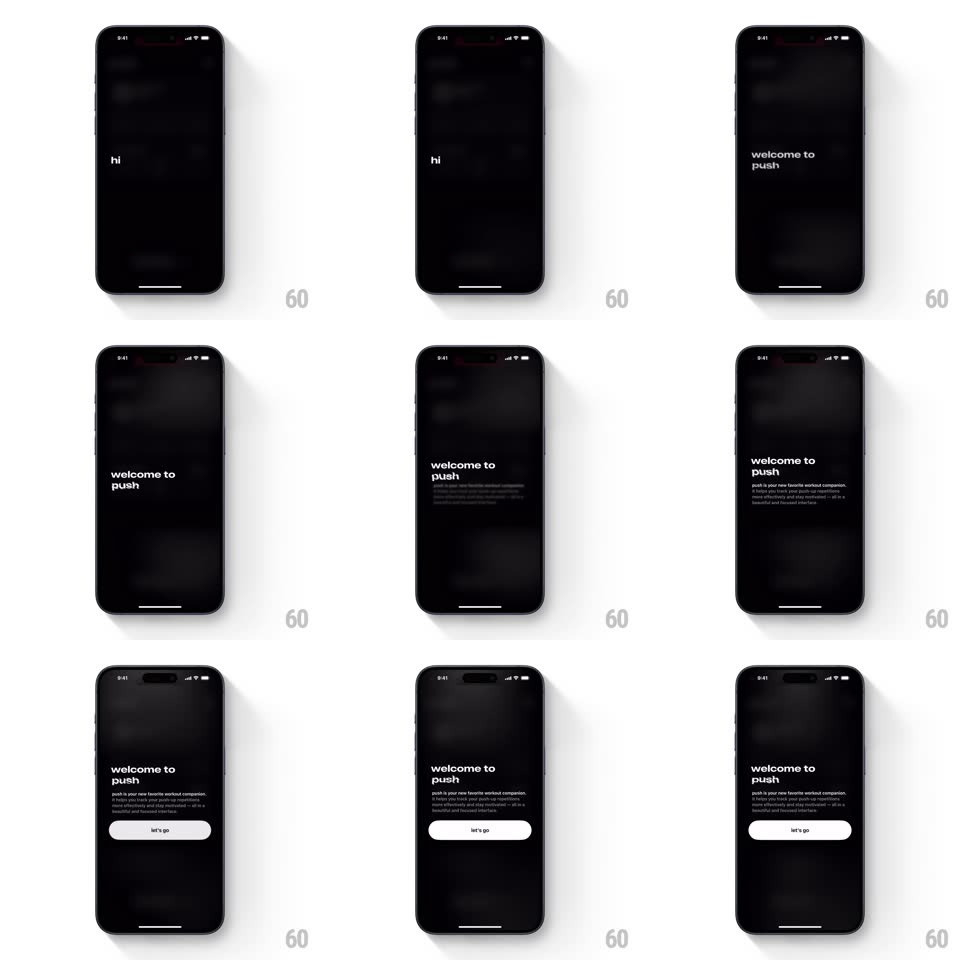

Media
Frame-by-frame

Rebuild this interaction 1:1: Push's onboarding intro - on black, "hi" appears alone, holds a beat, then "welcome to push" slides up with a small paragraph, and a white "let's go" pill rises last.

Rebuild this interaction 1:1: Push's onboarding intro - on black, "hi" appears alone, holds a beat, then "welcome to push" slides up with a small paragraph, and a white "let's go" pill rises last. ## Integration Integration: stack-agnostic spec - springs given as stiffness/damping, timed motions as duration + curve; map every value to your framework and animation library of choice. ## Scene Black screen, slightly visible blurred workout texture at top. Sequence: "hi" (small, centered-ish low), then "welcome to push" (two lines, bold, left-aligned), a gray paragraph of small copy, and a white rounded "let's go" button. ## Motion spec Pattern: staggered fade-rise intro. - "hi" fades in at slight oversize and settles (opacity 0 -> 1 with scale 1.04 -> 1, 400ms, ease-out), then holds ~700ms alone. - "welcome to push" rises 16px and fades in (450ms, ease-out); the paragraph follows 200ms later with the same rise, shorter fade. - "let's go" rises last from lower (20px, 400ms, spring ~320/22), then does a single soft pulse (scale 1 -> 1.02 -> 1) to invite the tap. - Between "hi" and "welcome", "hi" crossfades away (250ms) rather than moving - each beat replaces the last. ## Calibration - All type is white/gray on black; the button is the only filled element. - Total intro under 3s to interactive - no forced watching. ## Reduced motion All elements fade in together; no rises. ## Don't miss - The cadence is conversational: greet, pause, introduce, invite - each step waits for the last to finish. - Copy is lowercase throughout - keep it that way.